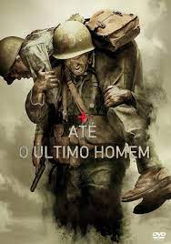

Em uma Chicago futurista,a sociedade é dividida em cinco facções: Abnegação, Audácia, Amizade, Franqueza e Erudição.
É nesse contexto que a jovem Tris (Woodley) descobre que é divergente, isto é, se encaixa em mais de uma facção, o que é considerado perigoso para os interesses do atual governo.
Em Velozes e Furiosos (The Fast and The Furious, 2001), o policial Brian O' Connor (Paul Walker)
é infiltrado no mundo das corridas de carros ilegais para juntar provas e capturar Dominic Toretto (Vin Diesel), líder da gangue e procurado pelo FBI.
O filme A Culpa É Das Estrelas está atualmente disponível no catálogo do Disney+.
Lançado em 2014 e baseado no best-seller homônimo de John Green, publicado no Brasil pela editora Intrínseca, o longa acompanha a história de dois adolescentes com câncer que iniciam uma jornada surpreendente sobre o amor e a vida
Durante a Segunda Guerra Mundial, o médico do exército Desmond T. Doss se recusa a pegar em uma arma e matar pessoas, porém, durante a Batalha de Okinawa ele trabalha na ala médica e salva mais de 75 homens, sendo condecorado.
"O Menino que Descobriu o Vento" é uma história inspiradora baseada na vida de William Kamkwamba, um jovem do Malauí que, contra todas as adversidades, construiu um moinho de vento para salvar sua comunidade da fome.
Página 2